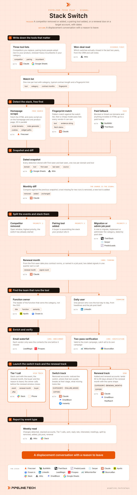

Play 18 · Third-party signals
Stack Switch
Give this to your agent
Install the Pipeline.tech "Stack Switch" outbound play. Fetch https://raw.githubusercontent.com/pipeline-tech/plays/main/core/SKILL.md and https://raw.githubusercontent.com/pipeline-tech/plays/main/plays/stack-switch/SKILL.md, save them as ~/.claude/skills/pipeline-outbound-core/SKILL.md and ~/.claude/skills/pipeline-stack-switch/SKILL.md, then run /pipeline-stack-switch.
Paste into Claude Code. It installs the shared core rules plus this play, then runs it as /pipeline-stack-switch.

Workflow, generated from the skillOpen full size
The change is the signal, not the state. A company running a competitor is a cold account, a company that dropped that competitor last month has an open window, and a company that just added the tool people pair with yours is heading toward a renewal decision on a date you can estimate. Two dated stack signals inside a quarter earn a call, and the email leads with a reason to leave, never a feature list.
Load pipeline-outbound-core first. Where a step says "apply core", follow that section of the core skill.
Inputs
Ask for these before step 1, and save them to ./pipeline-plays.config.json:
- The ICP in one paragraph: industries, headcount band, geography, the problem you solve, who owns it. Read the user's ICP file if one exists.
- The target list as a CSV or CRM view, one domain per row. This play watches a list; it does not build one.
- Stack answers from core section 1.
- The switch offer in one sentence: a concrete reason to leave an incumbent (done-for-you migration, a price or term guarantee, a capability the incumbent lacks that they already pay for elsewhere). Features only: stop and build the offer first.
Steps
1Write down the tools that matter
ToolsClaudeAttioGoogle Sheets
- Write three lists in a sheet: competitors you displace, pairing tools (what a buyer adopts right before or after your product), and renewal-heavy incumbents on annual contracts.
- Pull two years of won deals from the CRM and note the previous tool on each. Switches that actually closed go to the top; the rest are dropped.
- For each tool, record its category, the usual contract length (12 months when nobody knows), and a fingerprint hint: a script domain, a cookie name, a CSS prefix or a widget path.
2Detect the stack, free first
ToolsFirecrawlClaudeBuiltWith (option)TheirStack (option)
- Fetch the homepage HTML plus one product page per domain. Save the raw HTML so reruns cost nothing.
- Match the watch list fingerprints against script sources, meta tags, cookie names and widget paths; store the matched string as evidence. Then run a cheap model over the same HTML asking which vendors the site runs, so unlisted tools still land in the snapshot.
- Mark each fetch ok, blocked or timeout. Blocked domains and categories that leave no trace in HTML (back-office tools) go to BuiltWith or TheirStack if the user has either; otherwise they stay flagged
no detectionand are watched through job posts only.
3Snapshot and diff
ToolsGoogle SheetsAttioClaude
- Store every detection with first-seen and last-seen dates. Never overwrite; a detection that stops appearing keeps its last-seen date, which is the signal.
- Rerun monthly and diff against the previous snapshot. Absent for two consecutive runs counts as removed (one miss is usually a page change). Present for the first time counts as added.
- Write each change to the CRM as a dated signal with tool, direction and the evidence string as source. Undated changes are not stored.
4Split the events and stack them
ToolsTheirStackSerperPredictLeads (option)Claude
- Sort every change into four events: competitor removed, pairing tool added, migration or admin job post, renewal month approaching.
- Job posts: roles that mention the tool alongside migrate, implement, roll out, admin or owner. The post date is the signal date.
- Renewal month: first-seen date plus the contract length from step 1, unless a job post or press mention names a start date. The window opens about 90 days before the anniversary.
- Apply core: tiering. A single signal waits in the CRM. Two dated signals on one account inside a quarter (removed plus a job post, added plus an approaching renewal) earn a call.
- Apply core: exclusions.
5Find the team that runs the tool
ToolsApolloOcean.ioLinkedIn
- The buyer is the leader of the function that owns the category: a billing tool belongs to finance, a support tool to the support leader. The CEO only under 50 people or when no function head exists.
- Add one daily user as champion. The job post from step 4 often names the hiring manager; LinkedIn headlines mentioning the tool name the admin.
- Apply core: enrichment for the size bands.
6Enrich and verify
ToolsLeadMagicProspeoMillionVerifierBounceBan
- Apply core: enrichment (one buyer plus one champion per account).
- Apply core: verification.
7Launch the switch track and the renewal track
ToolsSlackPhoneEmailBisonInstantly (option)HeyReach (option)Claude
- Tier 1: post a Slack card with the stacked events, the renewal month, the buyer, the LinkedIn URL and the switch offer in one line. The owner calls within 48 hours, opening on the change, not the product.
- Tiers 2 and 3: two-step email, apply core: copy and send rules. Removed goes to the switch track; added and renewal-due go to the renewal track, as two campaigns, never one sequence.
- Every email leads with the concrete reason to leave from the inputs. A feature list is not a reason: for a fintech client, displacement copy that sold features alone produced 0 positives from about 4,400 sends.
- Never name the competitor. Describe the failure mode: "most teams your size hit the ceiling on seat pricing around year two".
- Draft 3 angle variants per track for email 1 and one threaded nudge for email 2; show them to the user before upload. Stop the sequence for any account that replies, books or shows as an open deal.
8Report by event type
ToolsAttioSlack
- Weekly: detections, changes, stacked accounts, Tier 1 calls, sent, reply rate, interested, meetings, split by event type. Removed should outperform added; if not, the failure mode in the copy is wrong.
- Retire any watch-list tool that has not produced a reply in two quarters.
- Apply core: credits and handoff.
Guardrails
- One detection alone never triggers outreach. Two dated signals inside a quarter, or the account waits.
- Never name the competitor in an email or call opener; describe the failure mode.
- Never send displacement copy without the switch offer. No reason to leave in one sentence, no play.
- Never say you scanned the site or tracked the stack. "Saw the team moved off its old billing tool" is the limit.
- A renewal month is an estimate unless a source named it. Write "coming up on renewal", not a date you cannot prove.
- One account, one sequence. Do not run this play and a cold play on the same domain in the same month.
Example run
User: "/pipeline-stack-switch for our support platform, target list is 1,800 mid-market SaaS accounts in the sheet"
- Asked for the switch offer (free migration of macros and history plus a 24-month price lock), confirmed EmailBison plus Attio plus Slack. Listed 4 competitors, 3 pairing tools and 2 incumbents; two competitors produced 80 percent of won switches.
- Scraped 1,800 homepages: 1,612 ok, 141 blocked, 47 timeouts, blocked rows sent to TheirStack. 1,090 accounts showed a watch-list tool.
- Diffed against last month: 38 competitor removals, 64 pairing tool additions, 29 migration or admin job posts, 112 accounts inside 90 days of an estimated renewal.
- 71 accounts carried two or more dated signals inside the quarter, 9 removed as customers or open deals.
- 62 function owners plus 44 champions found, 97 verified valid, 6 catch-all kept in a separate campaign.
- 14 Tier 1 Slack cards posted with renewal months. 48 contacts loaded into the switch track and 41 into the renewal track, both scheduled for Monday.
Run this play with usPipeline.tech runs Stack Switch end to end for clients: infrastructure, lists, copy, sends and replies.
Book a callView on GitHub